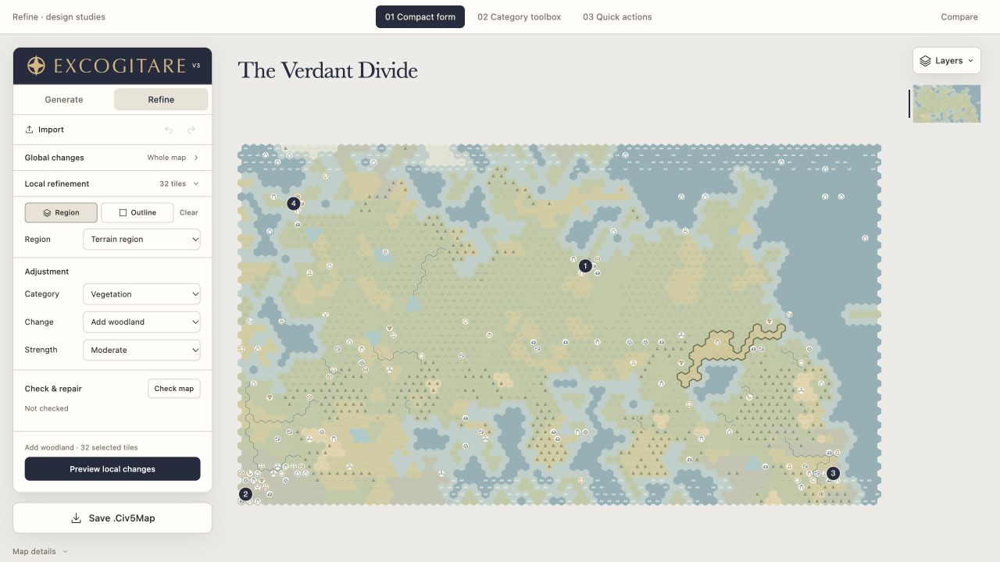
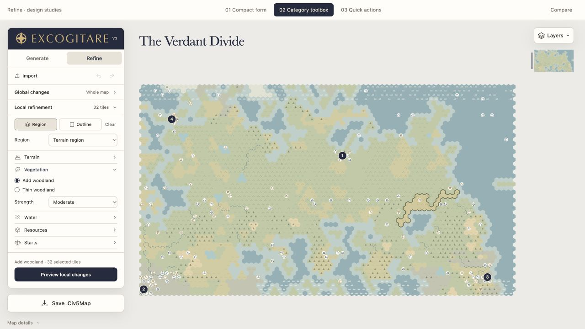
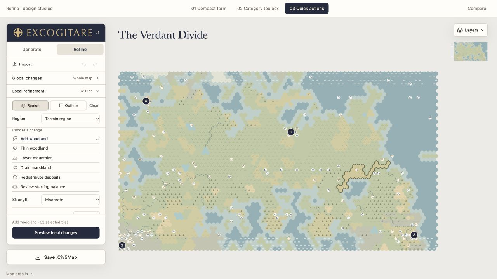
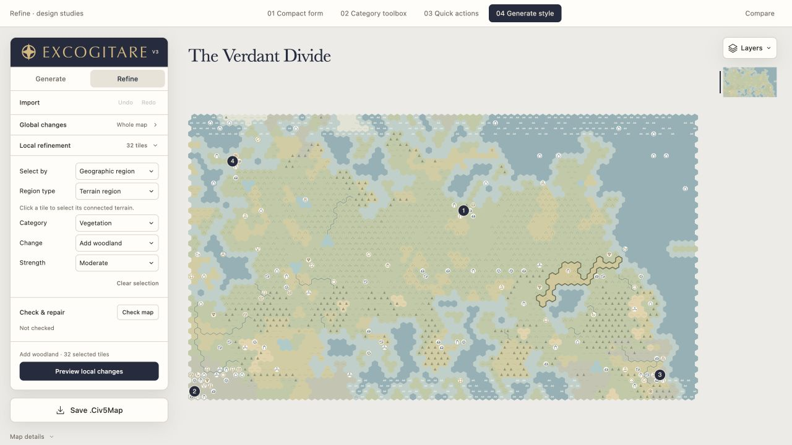

01Compact form
Category, change and strength in one familiar form.

Open mockupCategory, change and strength in one familiar form.

Open mockupExpand a tool family to reveal its actions.

Open mockupChoose a common adjustment from a short list.

Open mockupLabelled dropdowns and text actions aligned with Generate.

Open new mockup